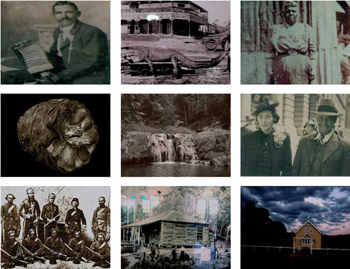

|
 The interactive other[wize] stories will be imparted through the use of still images, video, animation, audio, and text - including Yugambeh language. The 'objects' are representative of important people or events and they transport the viewer to a story about someone from the past. The 'stories' will also include animals, landscapes, seascapes and others.
Events evolve in a non-linear way, grasping at the unknown, not sure of what will be found or how it relates to other information, until perhaps another time. This concept reflects how many Aboriginal people experience family histories. The viewer has the opportunity to experience a similar 'fragmentation' of history and they might think about their own relationship to place and times.
"I have never heard of such a force in existence against the Blacks in any other Australian colony. Why should it be necessary in Queensland? Even if necessary, its action ought to be discriminating, so as not to involve the innocent in the punishment of the guilty..." wrote Father Duncan McNab in 1881, a Scottish Catholic Missionary and lonely protester for Aboriginal cause in Queensland. His brochures were censored back then, but have come to life in other[wize] a screen-based research project by artist Jenny Fraser.
Based on the Mununjali Ancestors of her family from around Tamrookum and Rathdowney close to the SE "Queensland" and NSW border, other[wize] highlights an era of 1800's colonial Australia and explores the prickly issues of Native Policing, Dispossession, Displacement, Massacres and Survival.
It is also a celebration of the Land, Language and Lives of Jennys family members that were moved from their traditional homelands to work on properties further north in the Gulf of Carpentaria. The 9 stories are offered through a non-linear narrative by the use of old family photographs, Yugambeh Language and historical documents, with further exploration through audio, video and text. "Such oral record does disrupt white Australia’s history that slavery didn’t happen – these movements were not the choices of free
people." writes Linda Carroli in her catalogue essay about other[wize].
Jenny Fraser was awarded a 2004 Creative Fellowship in order to research and produce the work which consists of an interactive CDRom, moving image work, prints and installation. "Fraser draws on one of the strongest and oldest traditions of her culture – storytelling and visual storytelling – and works with them in a technological space to achieve dislocating and disorienting effects." says Linda Carroli. URLs:
other[wize]
http://www.geocities.com/dot_ayu
|